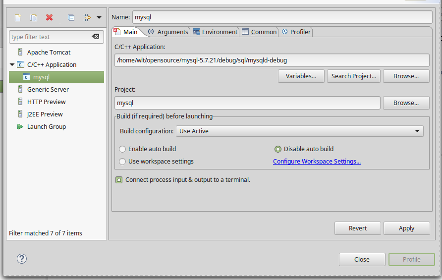
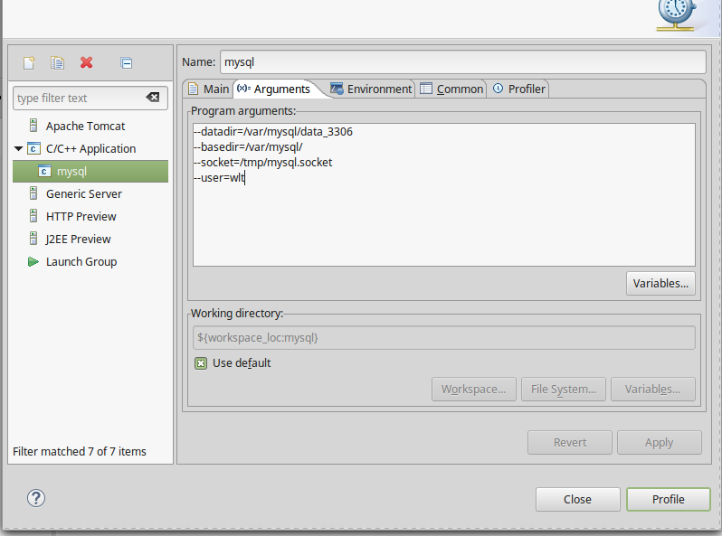

1 mysql编译
1.1 准备
1.1.1 安装包网上下载:
- mysql-5.7.21.tar.gz
- boost_1_59_0.tar.gz 将上面两个包解压缩到指定目录,例如
/home/wlt/opensource/目录下
1.1.2 更新依赖
- apt install cmake
- apt install bison
- apt install libaio-dev
- apt install libncurses5-dev
1.2 编译安装mysql
1.2.1 make 配置
cd mysql-5.7.21 mkdir debug cd debug
创建cmake.sh,内容如下:
cmake .. -DBUILD_CONFIG=mysql_release \ -DINSTALL_LAYOUT=STANDALONE \ -DCMAKE_BUILD_TYPE=DEBUG \ -DENABLE_DTRACE=OFF \ -DWITH_EMBEDDED_SERVER=OFF \ -DWITH_INNODB_MEMCACHED=ON \ -DWITH_SSL=bundled \ -DWITH_ZLIB=system \ -DWITH_PAM=ON \ -DCMAKE_INSTALL_PREFIX=/var/mysql/ \ -DINSTALL_PUGINDIR="/var/mysql/lib/plugin" \ -DDEFAULT_CHARSET=utf8 \ -DDEFAULT_COLLATION=utf8_general_ci \ -DWITH_EDITLINE=bundled \ -DFEATURE_SET=community \ -DCOMPILATION_COMMENT="mysql server(GPL)" \ -DWITH_DEBUG=YES \ -DWITH_BOOST=/home/wlt/opensource/boost_1_59_0
需要保证当前用户有/var/mysql目录写的权限
接下来生成Makefile配置
sh cmake.sh
接下来编译
# 24表示使用24线程来编译 make -j 24
1.2.2 安装
接下来安装
make install
创建配置文件
cd /var/mysql mkdir data_3306
初始化db
cd /var/mysql/bin ./mysqld-debug --basedir=/var/mysql --datadir=/var/mysql/data_3306 --initialize --user=wlt
1.3 配置eclipse
1.3.2 配置debug
如下图所示新建一个run configuration  
- C/C++ Application:
/home/wlt/opensource/mysql-5.7.21/debug/sql/mysqld-debug
-Program arguments
--datadir=/var/mysql/data_3306 --basedir=/var/mysql/ --socket=/tmp/mysql.socket --user=wlt
1.3.3 权限处理
mysql5.7安全策略作了调整,第一次启动时，会在log_error文件中生成 密码:
2018-02-12T16:20:05.295589Z 0 [Warning] Gtid table is not ready to be used. Table 'mysql.gtid_executed' cannot be opened. 2018-02-12T16:20:05.298436Z 1 [Note] A temporary password is generated for root@localhost: 7VLwehf?:j65
如上所示，密码为: 7VLwehf?:j65 我们登录 mysql时
mysql -uroot -h127.0.0.1 -p #输完密码后可以这样修改密码 alter user 'root'@'localhost' identified by 'new password';